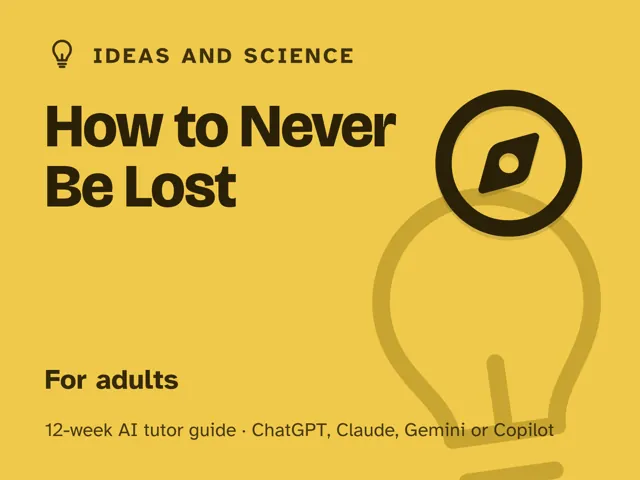

How to Never Be Lost
$29Instant download: a PDF to read, a browser copy, and the AI-tutor file you hand straight to any AI assistant.Buy it on Etsy →
Take the free placement check first: 15 minutes, and it names the week to start at.
A masterclass you actually finish, because most lessons send you outside for ten real minutes instead of into a lecture hall. This 12-week plan turns an AI tutor into a patient orienteering coach beside you: you describe what you actually see (a shadow, a star, a map's scale, the slope of a street), and it questions you until you can reason out your own bearing, direction, or position, instead of handing you an answer. You'll learn why every map is a chosen lie (projection, scale, and symbol all trade truth for clarity) and how to build a running map in your own head from the sun, the stars, the terrain, and simple dead reckoning. No compass experience assumed, no special gear required. The result: you can orient yourself, plan a route, and walk it without once opening an app.
Format: A digital guide with 12 ready-to-run, ~60-minute weekly sessions. You lead each one, fully scripted, minute by minute, with every step already written out for you. No compass experience, no special equipment (a phone compass app, a stick, and a local map are enough), and no prior AI use required. If you've never opened an AI chat assistant before, the guide's opening section gets you from zero to ready in about five minutes.
What you get
- 12 deep weekly sessions, each built to actually run for about an hour: a plain-language concept, a concrete worked example, a minute-by-minute session plan with the AI-tutor prompts built in, a "show me" checkpoint, common mistakes to watch for, and practice.
- A "Never used an AI chat assistant? Start here" onboarding that takes a complete beginner from zero to ready in five minutes. No paid plan needed; any free AI assistant works.
- Four rescue prompts in the front matter for when you're genuinely turned around, want the tutor to level you up, or need a guardrail that stops it from just handing you a bearing.
- An orientation that starts where every real navigator starts (realizing "sense of direction" is a trainable skill, not a gift) and the one rule that keeps it yours: predict your position or direction first, then verify.
- Safety notes where they matter: backup map and phone on outdoor weeks, never looking at the sun, choosing safe spots after dark, and telling someone your route on the project walk.
The 12 weeks
- Lost by Design
- How Maps Lie
- Bearings & Orientation
- Building a Mental Map of a Place
- The Sun & Shadows as a Compass
- Stars & the Night Sky
- Terrain, Water & Landmarks as Guides
- Dead Reckoning
- Navigating a City Without an App
- Project Week I: Plan a Real Wayfinding Challenge
- Project Week II: Walk the Challenge
- Demo Day & the Wayfinder's Habit
Who it's for
Adults who are genuinely helpless without GPS (the blue dot disappears and the panic sets in) and who want a real, working sense of direction and place instead of another app. No outdoor experience, compass background, or "natural talent" assumed. If you can take a walk, you're ready.
Why this instead of a free chatbot
Ask a raw chatbot "which way is north?" and it either guesses or tells you to check your phone; it never builds the skill. This pack ships the structure and reasoning it lacks: a first-principles understanding of how maps represent (and distort) reality, a real 12-week progression from bearings to stars to dead reckoning, and a tutor deliberately set up to question what you observe instead of just supplying an answer. You end the course able to work out your direction from what you can see, not the owner of one lucky correct guess.
FAQ
- Do I need any experience or special equipment? None. A phone compass app is enough to start; a paper map is useful but optional. You'll also want a straight stick for the sun week.
- Which AI does it use? What if I've never used one? Works with any modern AI assistant: ChatGPT, Claude, Copilot, Gemini. Free versions are enough; no paid plan needed. If you've never used an AI chat assistant before, the guide's first section walks you through setup in about five minutes.
- Does it work outside the US? Yes. The guide is written in US English, and every launch prompt tells the AI to use your country or region (as you give it, as it infers, or by asking) for units, spelling, and examples, and your hemisphere for the sun and stars.
- Isn't this what GPS already does, just slower? No, and that's the point. GPS tells you where you are; it never teaches you to work that out yourself. This pack builds the underlying skill (reading a map honestly, taking a bearing, reading the sun, stars, and terrain) so you aren't stuck when the signal drops or the battery dies. Keep a map or phone as a backup anyway.
- Do I need to go somewhere remote or wild? No. Most weeks work in your own neighborhood or town; the two project weeks have you plan and walk a 20- to 40-minute route somewhere you've never navigated to unaided, on paths or streets you'd feel safe walking.
- Refunds? Standard marketplace refund policy applies.
$29Instant download: a PDF to read, a browser copy, and the AI-tutor file you hand straight to any AI assistant.Buy it on Etsy →